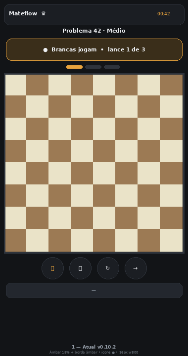
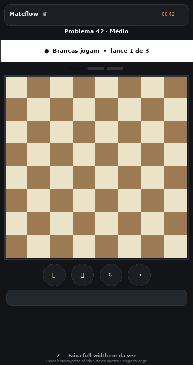
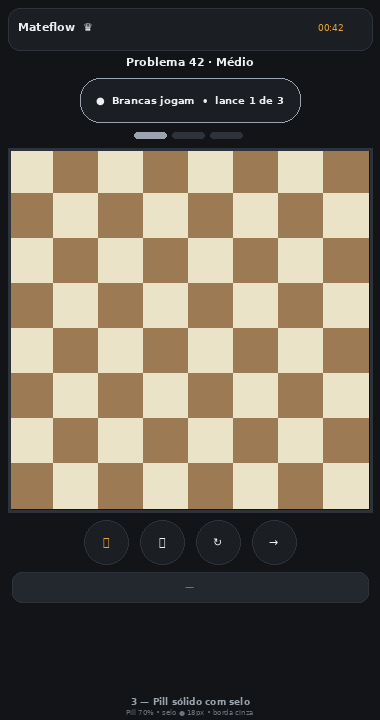
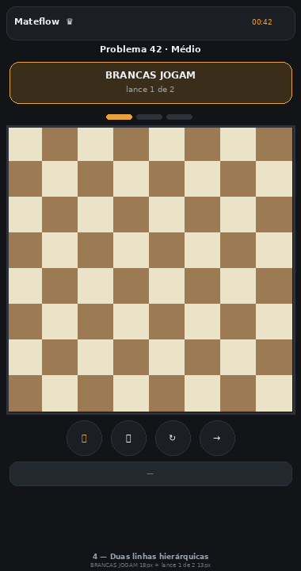
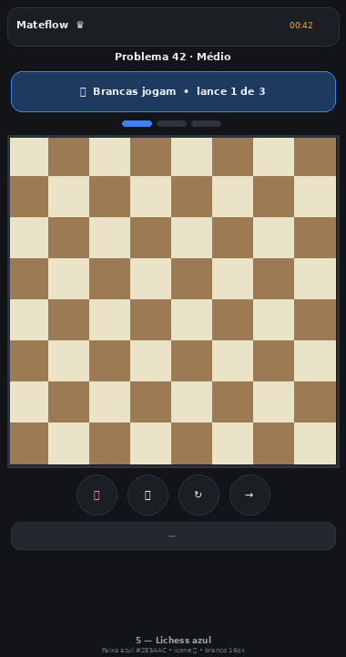
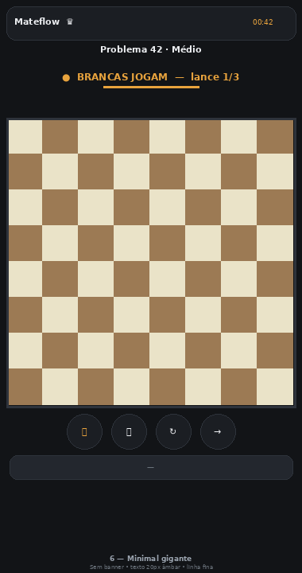
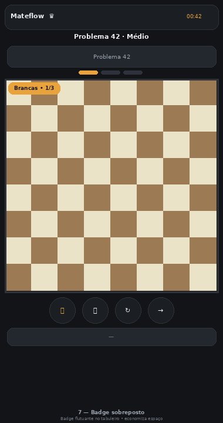
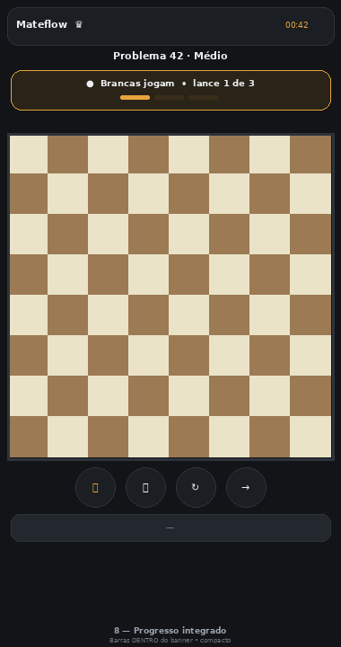
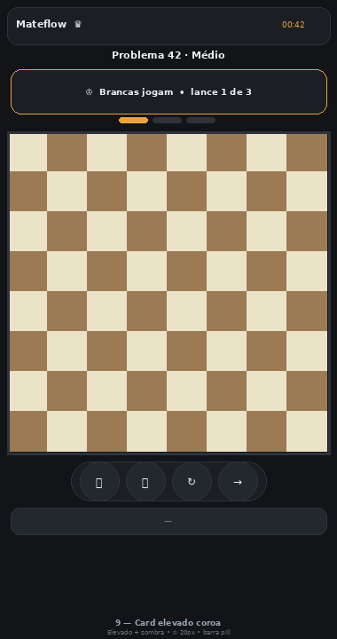
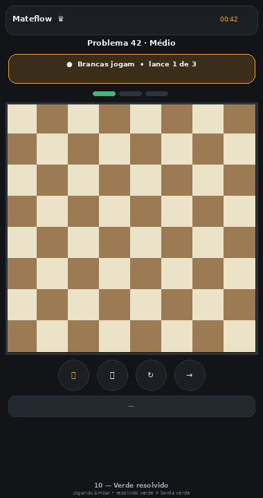

Pedido: tabuleiro maior ocupando largura total + botões colados • “Brancas/Pretas jogam • lance X de Y” mais destacado.
A Opção 1 é o que já está no APK v0.10.2. Escolha 1 número ou “misturar”.

Banner âmbar 18% + borda âmbar 1.6px, borderRadius 12, ícone ●, 16px w800. Padding 8px, gap 2px ao tabuleiro. Equilíbrio entre destaque e identidade.

Fundo branco/preto sólido ocupando 100% da largura, texto cor oposta. Máxima clareza de quem joga. Tabuleiro edge-to-edge.

Pill central 70% largura, selo ● 18px com sombra, borda cinza. Mais leve visualmente.

Linha 1: BRANCAS JOGAM 18px w900 caixa alta, linha 2: lance 1 de 2 13px. Hierarquia forte, escaneamento rápido.

Faixa azul #1E3A5F + borda #3B82F6, ícone 👑. Familiar para quem usa Lichess.

Sem card: texto 20px w900 âmbar + linha fina 2px. Mais limpo, fonte maior sem ocupar espaço.

Badge flutuante no canto do tabuleiro (sobreposto). Economiza altura, tabuleiro ainda maior.

Barras dentro do banner (embaixo do texto). Tudo em um elemento, mais compacto.

Card elevado com sombra, ícone ♔ 20px, botões em barra pill única colada no tabuleiro.

Jogando âmbar, resolvido verde 18% + borda verde com ✓. Feedback de conclusão muito visível + borda do tabuleiro verde.